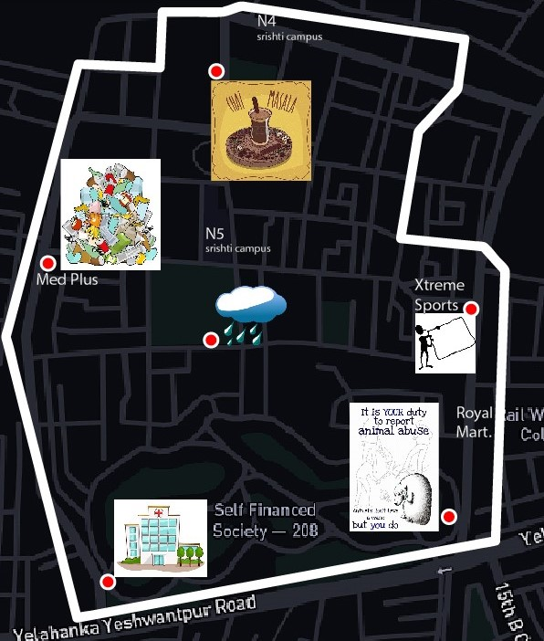

You are the
Investigator
Instructions
- You can now contact your fellow investigators on the whatsapp group and give your starting location.
- You must only walk through the map of the game. You will be disqualified if you are caught using any mode of transportation in the game.
- You can quit the game by leaving the Whatsapp group.
- Save the the QR code links you have scanned/shared for future navigation.
- The hint to find the location of the old man's basement (QR code) will be shared by mediator onto the group.
- Contact the mediator if there is any difficulty while playing the game.
The old man updates his tracks every 5 mins which blacks out on the map indicating that part of town is shut down of electronics. His direction of walk is not revealed.
Meanwhile you can go to narrative points scattered on this map
(click on the map)

and capture clues or parts of the narrative that may perhaps help in locating the old man or his basement.
Upon reaching these locations on the map you can scan the QR codes to read the links within them and also share these links with the other investigators. These actions will speed up the process of reading into the story of this game and collectively capture the old man

Key of the game
- Co-ordinate and collaborate with each investigator.
- Update your own location to the whatsapp group as soon as the old man updates his track on the map.
- Plan out the probable locations of the old man/basement with other investigators and
- quickly reach to those locations as you play out each move to trap him.
- The investigators can split up to either locate the old man or his basement to end the game faster.
But the time is running as the the old man is figuratively slow but can cover up the map faster with certain privileges given to him.
What to do when the old man or his basement is sighted?
- If you meet the old man, you ask his starting location and post on the whatsapp group to confirm that he is captured.
- If you find the old man's basement (QR code), you must then scan the code and send it's screenshot to the group.
Beware!
The old man is also part of the whatsapp group and can thus view your locations. This is an allotted privilege given to the old man to plan his escape route. The old man also has 3 powerhouses (locations) on the map. Upon reaching it, the old man can shut down/blackout (electronic malfunction) a major part of the map.
But these powerhouse locations aren't visible to investigators. To avail these locations an investigator must share this game with 2 of their friends ☺. Upon sending it's proof (screenshot) on the group, the locations will be made available.
{kind=link}